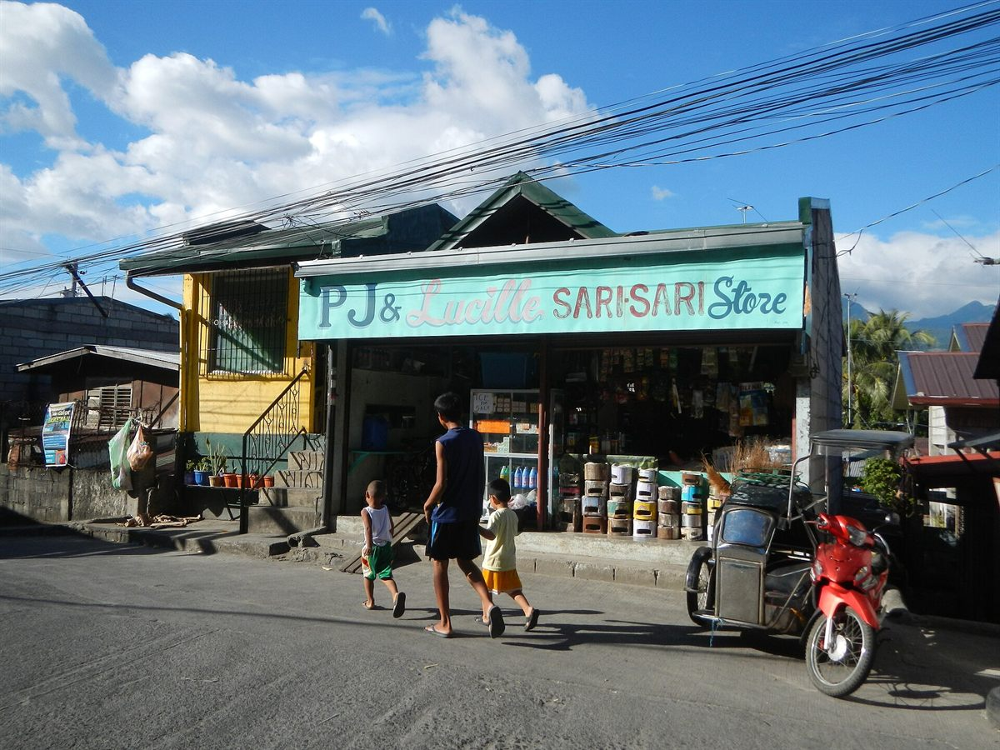

Signs & labelsMga karatula
Hand-painted signs and loud packaging as vernacular design.Mga karatulang pininta sa kamay at matitingkad na pakete bilang disenyong bernakular.
From painted store names to “Bawal ang utang, bukas pwede,” the sari-sari store is full of everyday Filipino design and humor.Mula sa pinintang pangalan ng tindahan hanggang sa “Bawal ang utang, bukas pwede,” puno ang sari-sari store ng pang-araw-araw na disenyo at biro ng mga Pilipino.
Ang sasagutin ng kwentong itoWhat this story answers
- Who paints the store signs, and how are they made?Sino ang nagpipinta ng mga karatula ng tindahan, at paano ito ginagawa?
- What do handwritten notices say, and why are they funny?Ano ang sinasabi ng mga sulat-kamay na paalala, at bakit nakakatawa ang mga ito?
- What makes the packaging on the shelf so loud?Bakit napakatingkad ng mga pakete sa istante?
Look at a sari-sari store from across the street, before you read anything. First you see color: a painted signboard, a bright awning, packaging on every inch of the shelf. The store is designed from the outside in.Tingnan ang isang sari-sari store mula sa kabilang kalye, bago ka magbasa ng kahit ano. Kulay muna ang makikita mo: pinintang karatula, matingkad na bubong, mga pakete sa bawat pulgada ng istante. Dinisenyo ang tindahan mula sa labas papasok.
Many store names are painted by hand, often after the family who runs the store. The letters may be uneven, outlined, with a shadow. This is design without a design brief. It has to be read from the road, cost little, and be easy to repaint, and that is exactly why it works.Maraming pangalan ng tindahan ang pininta sa kamay, kadalasan ay ipinangalan sa pamilyang nagpapatakbo nito. Puwedeng hindi pantay ang mga letra, may balangkas, may anino. Disenyo ito na walang design brief. Kailangan itong mabasa mula sa kalsada, mura, at madaling pintahan muli, at iyon mismo ang dahilan kung bakit ito epektibo.
Then there are the handwritten notices on cardboard, like “Bawal ang utang, bukas pwede.” They say a rule and a joke at once. Humor lets the tindera set a limit without starting an argument with a neighbor she will see again tomorrow.Nariyan din ang mga sulat-kamay na paalala sa karton, tulad ng “Bawal ang utang, bukas pwede.” Nagsasabi ang mga ito ng patakaran at biro nang sabay. Sa pamamagitan ng biro, nakakapagtakda ang tindera ng hangganan nang hindi nakikipagtalo sa kapitbahay na makikita niya ulit bukas.
The packaging on the shelf is loud for a different reason. Hanging strips, bold type and strong colors all compete for the eye in a very small space. We borrowed those colors for this site: the red of the signs, the yellow of the sachets and the teal of the painted walls.Iba ang dahilan kung bakit matingkad ang mga pakete sa istante. Nag-aagawan sa paningin ang mga nakasabit na hanay, malalaking letra at matitingkad na kulay sa napakaliit na espasyo. Hiniram namin ang mga kulay na iyon para sa site na ito: ang pula ng mga karatula, ang dilaw ng mga sachet at ang teal ng mga pinintang pader.
Design historians describe vernacular design as “artistic and technical expression broadly characteristic of a locale or historical period.” In the Philippines that includes the hand-painted signs that bus and jeepney drivers buy from roadside painters. It is the design most of us actually grew up reading.Inilalarawan ng mga historyador ng disenyo ang vernacular design bilang “artistic and technical expression broadly characteristic of a locale or historical period.” Sa Pilipinas, kasama rito ang mga karatulang pininta sa kamay na binibili ng mga drayber ng bus at jeepney sa mga pintor sa tabing-daan. Ito ang disenyong talagang kinalakihan nating basahin.

“Napansin mo rin pala ’yung mga karatula.”
PinagkunanSources
Meggs, P. B., & Purvis, A. W. (2012). Meggs’ History of Graphic Design (5th ed.), p. 475. John Wiley & Sons.
Balaguer, L. (2016, May 3). Tropico Vernacular. Triple Canopy.
Page 4 / 5Pahina 4 / 5